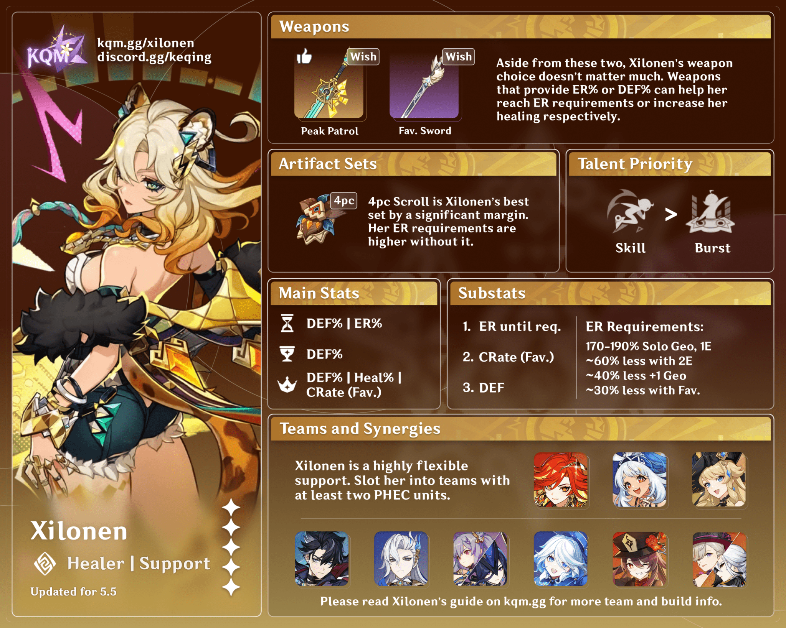

Xilonen is a playable Geo character in Genshin Impact. A Name Engraver
for the Children of Echoes bearing her own Ancient Name of BRK ("BRK,"
Baraka), Xilonen is often found enjoying her leisure time with naps in
the sun but at the forge, her craftsmanship is second to none.
Xilonen's skill with the forge is renowned throughout Natlan. Many
come from far and wide to pay homage to her superb skill. Some hope to
commission her to forge them weapons, while others only seek to see
the visage of this great smith, such that they might have information
of great interest to talk about. But Xilonen couldn't care less about
what all her customers are thinking. No matter what kind of
ridiculous, fancy titles others give her, before all the honors and
accolades, she is first and foremost an artisan. All she need do is
refine the ore, and surely and steadfastly hammer it into its final
shape one blow at a time, in accordance with the customer's
requirements. Reputation will not strengthen the blows of her hammer
upon the anvil, nor will slander cool the coals of her furnace.
However, when a customer steps into her workshop, it is not the heat
of the furnace that welcomes them, but rather a long form filled with
blanks needing to be filled in. "I'm happy to take the commission. But
first, we need to iron out the details." "Effective communication
means efficient work. Come on, let's talk about just what you want."

Character Trailer - "Xilonen: Fervent Beats" | Genshin Impact